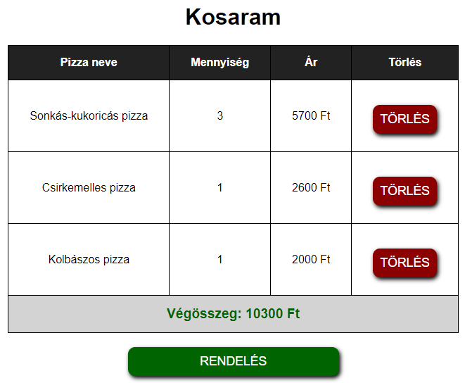

Az eheti órán újból elővesszük a már jól ismert projektünket, az Irinyi Pizzázó weboldalát.
Az eddigi gyakorlatok során már megvalósítottuk a regisztrációt (profilkép feltöltéssel), a bejelentkezést, valamint volt szó a menetkövetésről. Emlékeztetőképpen: a menetkövetést mi arra használtuk, hogy miután a felhasználó sikeresen bejelentkezett, akkor a $_SESSION tömbbe egy user kulcssal beleraktuk azt a Felhasznalo objektumot, ami a bejelentkezett felhasználót reprezentálja (ily módon a belépett felhasználó adatait a $_SESSION["user"] indexeléssel el tudtuk érni az egyes aloldalakon).
Az eheti feladatunk a pizzarendelés megvalósítása lenne. Szeretnénk elérni, hogy a bejelentkezett felhasználók...
admin nevű felhasználó fogja megkapni, és ő fogja tudni kiszolgálni a beérkező rendeléseket).A pizza.php oldalon betöltjük a pizzak.txt fájlban tárolt pizzák adatait a $pizzak változóba (ez egy Pizza típusú objektumokat tároló tömb lesz), majd egy táblázatban kiíratjuk az egyes pizzák adatait.
Azt szeretnénk, hogy csak bejelentkezett felhasználók tudjanak a kosarukba tenni pizzákat. Rejtsük el a nem belépett felhasználók elől az egyes sorok utolsó cellájában megjelenő "Kosárba" gombot (ehhez csak meg kell néznünk, hogy be lett-e állítva a $_SESSION["user"] értéke)!
<table id="pizza-table"> <tr> ... <?php if (isset($_SESSION["user"])) { ?> <th>Kosárba tétel</th> <?php } ?> </tr> <?php foreach ($pizzak as $pizza) { ?> <tr> ... <?php if (isset($_SESSION["user"])) { ?> <td> <form action="pizza.php" method="GET"> <input type="hidden" name="pizza-name" value="<?php echo $pizza->getNev(); ?>"> <input type="submit" name="add-to-cart-btn" value="Kosárba"> </form> </td> <?php } ?> </tr> <?php } ?> </table>
Nézzük meg a kosárba tételt elvégző HTML űrlap forráskódját!
<form action="pizza.php" method="GET"> <input type="hidden" name="pizza-name" value="<?php echo $pizza->getNev(); ?>"> <input type="submit" name="add-to-cart-btn" value="Kosárba"> </form>
Látható, hogy az űrlapot a jelenlegi PHP fájlban, a pizza.php-ban fogjuk feldolgozni. Mivel GET-tel továbbítjuk az űrlapot, ezért az adatok az URL-ben lesznek továbbítva. Az űrlapon találunk egy rejtett mezőt, amit a felhasználó nem fog látni, csupán arra szolgál, hogy továbbítsuk annak a pizzának a nevét, amit kosárba szeretne tenni a felhasználó.
A webes projektünkben minden felhasználó rendelkezik egy saját kosárral. A Felhasznalo osztály $kosar adattagja egy tömb, amely a megrendelt pizzák adatait fogja tárolni. A felhasználó kosarának tartalmát a cart.php oldalon fogjuk megjeleníteni. A kosár tartalmának a megjelenítése valami ilyesmi lesz:

Amennyiben egy pizzából többet rendelünk - például sonkás-kukoricás pizzából rendelünk hármat -, akkor nem azt fogjuk csinálni, hogy 3-szor megjelenítjük a sonkás-kukoricás pizzát a "Kosaram" táblázatban. Ehelyett azt fogjuk csinálni, hogy minden pizzafajta esetén számontartjuk, hogy az adott pizzából összesen mennyit rendelt a felhasználó, és ezért mennyit kell fizetnie (tehát lényegében a kosárba tett pizzákat nevük alapján csoportosítjuk.)
A KosarItem osztály segítségével tudjuk eltárolni, hogy egy adott nevű pizzából mennyit rendelt a felhasználó, és ennyi pizzáért mennyit kell fizetnie. Az osztály konstruktora egy pizzát és egy mennyiség értéket vár paraméterben (az utóbbi paramétert nem kötelező megadni, annak alapértéke 1). A $nev adattagot a pizza nevével, a $mennyiseg adattagot a paraméterben kapott mennyiség értékkel, az $ar adattagot pedig a pizza árának és a mennyiségnek a szorzatával inicializáljuk (hiszen $mennyiseg-szer kell kifizetnie a felhasználónak a pizza árát).
class KosarItem { private string $nev; private int $mennyiseg; private int $ar; public function __construct(Pizza $pizza, int $mennyiseg=1) { $this->nev = $pizza->getNev(); $this->mennyiseg = $mennyiseg; $this->ar = $this->mennyiseg * $pizza->getAr(); } // ... }
A felhasználók kosarában ilyen, KosarItem típusú objektumokat fogunk tárolni.
TODO
TODO